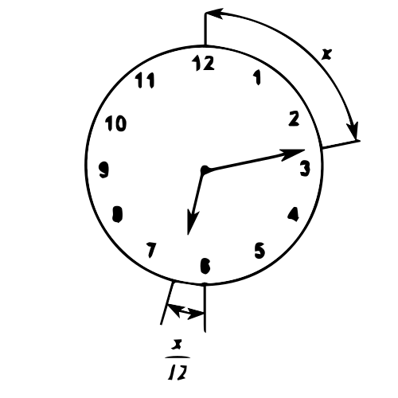

By principle, the minute hand (MH) always moves faster than the (HH). The relation between the minute hand and the hour hand is
$$\text{HH} = {\text{MH} \over 12}$$
where: MH is in number of minutes
Also, the hour hand in terms of second hand is expressed as
$$\text{HH} = {\text{SH} \over 720}$$
where: SH is in number of seconds

A sequence or progression is a set or collection of numbers arranged in an orderly manner such that the preceding and the following numbers are completely specified.
A infinite sequence is a function whose domain is the set of positive integer. If the domain of the function consists of the first n positive integers only, then it is said to be a finite sequence.
$$\eqalign{
& 1 + 3 + 5 + 7 + 9 + 11 + 13 + 15 \to \text{ Finite sequence} \cr
& 1 + 3 + 5 + 7 + 9 + 11 + 13 + \cdot \cdot \cdot \to \text{ Infinite sequence} \cr} $$
Terms or elements are the term used to describe the numbers in a given sequence.
Series is the sum of the terms in a sequence. An alternating series has positive and negative terms arranged alternately. If an infinite series has a finite sum, it is referred to as convergent series and divergent series. If it has no sum at all.
The most common types of sequence are Arithmetic, Harmonic and Geometric Progression.
A sequence is said to be in arithmetic progression if its succeeding terms have a common difference. The corresponding sum of all the terms in arithmetic progression is called as arithmetic series.
There are only two formulas (i.e. last term and sum) to remember and used in solving a problem in arithmetic sequence.
Last term (nth term):
$${a_n} = {a_1} + (n - 1)d$$
Sum of all terms:
$$S = {n \over 2}({a_1} + {a_n})\ \ \ \ \ \text{or}\ \ \ \ \ \ S = {n \over 2}[2{a_1} + (n - 1)d]$$
where:
a1 = first term
an = last term (nth term)
n = number of terms
d = common difference = a2 - a1 = a3 - a2 = ...
A sequence is said to be a geometric progression if its succeeding terms have a common ratio. The corresponding sum of all the terms in geometric progression is called as geometric series.
Also, there are only two formulas (i.e. last term and sum) to remember and used in solving a problem in geometric sequence.
Last term (nth term):
$${a_n} = {a_1}{r^{n - 1}}$$
Sum of all terms:
$$S = {{{a_1}({r^n} - 1)} \over {r - 1}}\ \ \ \ \ \ \text{or}\ \ \ \ \ \ S = {{{a_1}(1 - {r^n})} \over {1 - r}}$$
where:
a1 = first term
an = last term (nth term)
n = number of terms
r = common ratio = ${{a_2} \over {a_1}} = {{a_3} \over {a_2}}$ = ...
This type of progression is a geometric progression only that the number of terms is extremely large or infinity.
If r > 1, sum of all terms is infinite
If r < 1, the sum of all terms is$$S = {{{a_1}} \over {1 - r}}$$
where:
a1 = first term
r = common ratio
A sequence of numbers whose reciprocals form an arithmetic progression is known as harmonic progression. In solving a problem, it would be wise to convert all given terms into arithmetic sequence by getting its reciprocals. Use the formulas in arithmetic sequence and take the reciprocal of resulting value to obtain the equivalent harmonic term for an answer.
Fibonacci Numbers - Named after the italian merchant and mathematician, Leonardo di Pisa or Fibonacci (Figilio dei Bonacci, "Son of the Bonnaccis").
1, 1, 2, 3, 5, 8, 13, 21, 34, 55, 89, 144...
Each number is equal to the sum of the two preceding numbers.
Lucas Sequence - Named after Edouard Lucas (1841-1891). Like the Fibonacci numbers, every term of the Lucas sequence is the sum of the two preceding numbers.
1, 3, 4, 7, 11, 18, 29, 47, 76, 123...
Figurate Numbers:
Triangular numbers: Number which can be drawn as dots and arranged in triangular shape.
1, 3, 6, 10, 15, 21,...
Square numbers: Numbers which can be drawn as dots and arranged in square shape.
1, 4, 9, 16, 25, 36, ...
Gnomons: Numbers which can be drawn as dots on equally long legs of a right angle.
1, 3, 5, 7, 9, 11, ...
Oblong numbers: Numbers which can be drawn as dots and arranged in a rectangle shape.
2, 6, 12, 20, 30, ...
Pentagonal numbers: 1, 5, 12, 22, 35, ...
Cubic numbers: 1, 8, 27, 64, ...
Tetrahedral numbers: 1, 4, 10, 20, 35, 56, ...
Square pyramidal numbers: 1, 5, 14, 30, ...
Supertetrahedral numbers: 1, 5, 15, 35, 70, ...
Diophantine Equations - refers to systems of equations where the number of equations is one less the numbers of unknowns. These equations yield whole numbers for its answers. This was named after a Greek mathematicians, Diophantus (c. 250 AD).
Variation Problems: Variations are expressed in the following:
x varies directly with y. $\ \ \ \ \ x=ky$
x varies inversely with y. $\ \ \ \ \ x=k{1 \over y}$
where: k = proportionality constant